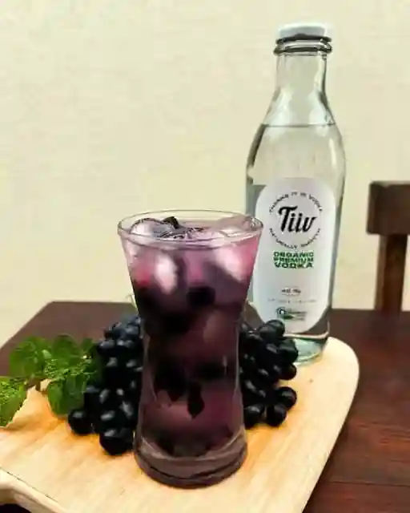
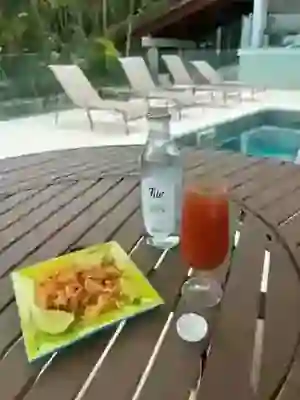

Origem orgânica
Uma escolha consciente de matéria-prima, conectada à agricultura brasileira.
Conteúdo para adultos
Ao entrar, você declara ter idade legal para consumir bebidas alcoólicas no Brasil.
Este conteúdo é destinado exclusivamente a maiores de 18 anos.
Organic premium vodka
Álcool neutro orgânico de cana-de-açúcar, água e um processo cuidadoso de multidestilação e filtragem.
Thanks, it is Vodka
A TiiV nasce do encontro entre matéria-prima brasileira, produção em pequenos lotes e uma busca simples: criar uma vodka naturalmente suave e versátil.


Nossa essência
Produzida a partir de álcool neutro orgânico de cana-de-açúcar, a TiiV combina origem, pureza e precisão em uma bebida de perfil suave e aveludado.
Uma escolha consciente de matéria-prima, conectada à agricultura brasileira.
Multidestilada e filtrada seguindo rigorosos padrões de qualidade.
Pure by process
Base brasileira selecionada para um destilado limpo e equilibrado.
Controle cuidadoso para refinar aromas, textura e suavidade.
O último cuidado antes de cada garrafa chegar ao seu brinde.

40% vol.Organic premium vodka
Naturally versatile
Pura, com gelo ou como base de coquetéis. A suavidade da TiiV deixa os ingredientes se expressarem sem perder a personalidade.

Para brindar do seu jeito
Leve, fresca e versátil para acompanhar almoços, encontros, festas ou aquele drink preparado sem pressa.
Fale com a TiiV
Comercial e parcerias
Para distribuição, eventos, pontos de venda e colaborações, fale com a equipe TiiV.
talk@vodkatiiv.com